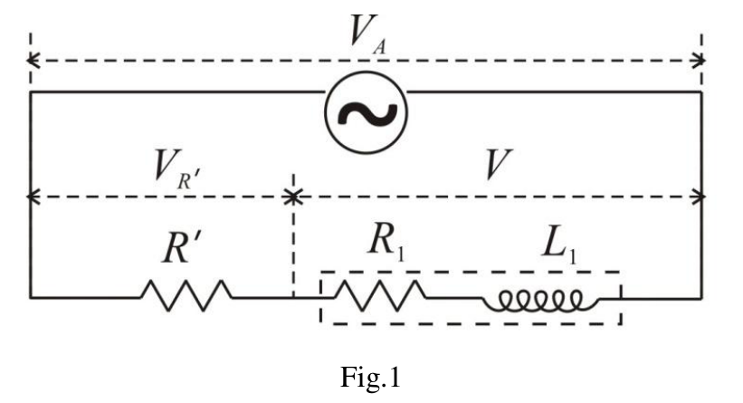
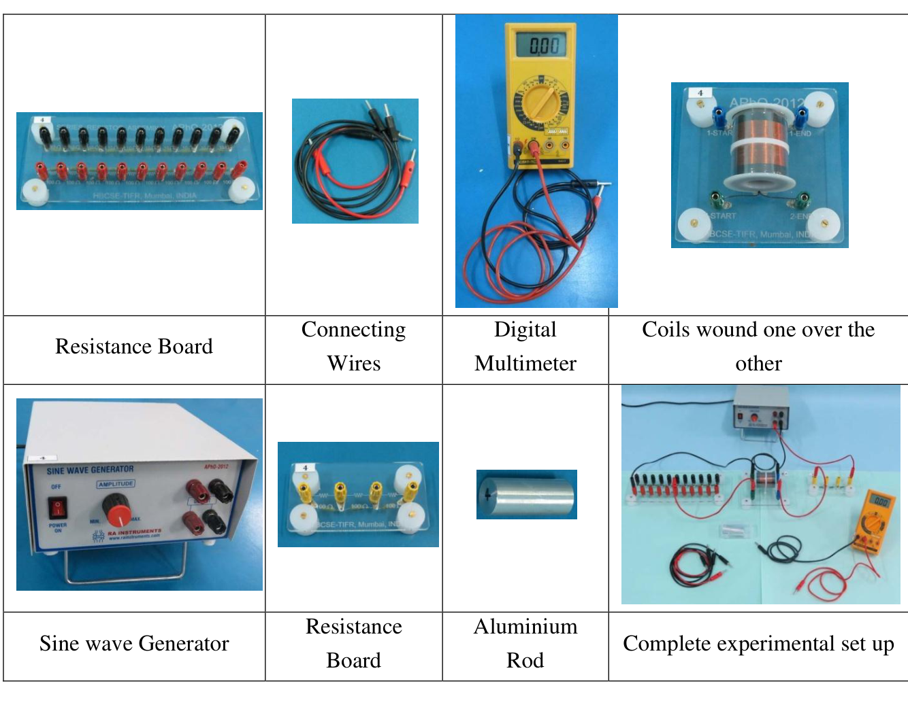
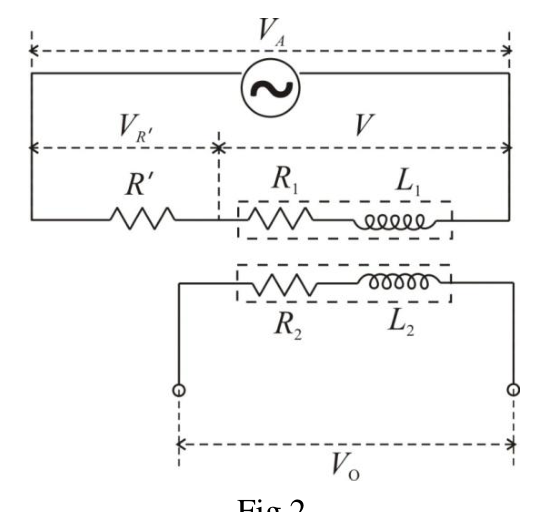
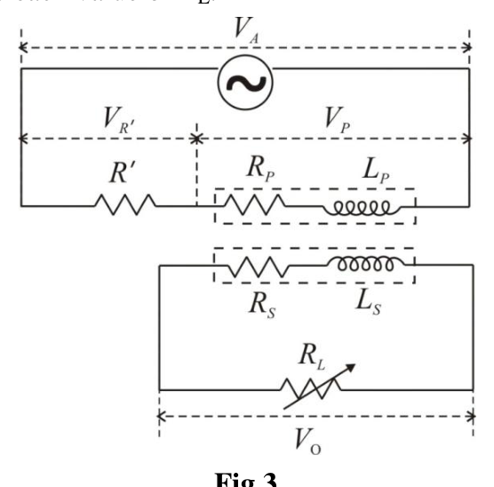

ELECTROMAGNETIC INDUCTION
The modern technique of eddy current testing employed for detecting defects under the surfaces of metallic objects is based on the principles of electromagnetic induction. The circulating currents induced in conducting bodies due to changing magnetic flux in the region where they are located are called eddy currents. The defects are detected by observing the changes in the resistance and inductance of a coil carrying alternating current when held near the surface of the object.
Unless the core of the solenoid has some ferromagnetic material the magnetic flux is proportional to the current . The constant of proportionality is called self inductance of the coil and is represented by letter . The self-induced emf in a coil with inductance is,
therefore, given by .
In a coupled system of circuits with current in one circuit the magnetic flux linked with it is given by
Where is the self inductance of that circuit and is the mutual inductance of the coupled system. Similar equation holds for the reverse, with .
L-R Circuit
A sinusoidal alternating current with angular frequency flowing through a series combination of resistance and inductance produces a voltage drop across the combination.
If we represent current by , the voltage drop across the resistance is equal to and across the inductance it is . We can combine these to get the voltage across the - combination. The quantity is called inductive reactance and is represented by symbol . One can readily show that the voltage across the coil is equal to , where
Z = \sqrt{R^2 + X^2} \tag{1}
and
\theta = \tan^{-1}\!\left(\frac{X}{R}\right) \tag{2}
Alternating voltage as well as current vary continuously in both magnitude and polarity during the course of time but the rms values of these quantities calculated over a cycle are independent of time and the relation where both and represent the rms values, is analogous to Ohm’s law. From this we see that
V^2 = (IR)^2 + (IX)^2 \tag{3}
(Note:- The concept of resistance is basically related to dissipation of electrical energy and the value of resistance of a coil in ac circuit can be different from its value determined by applying Ohm’s law with dc currents.)
When there are additional resistances and/or inductances in series with the coil, we can still consider the voltage drop across the combination as equal to the square root of the sum of the squares of voltage drops across the total resistance and across the total inductance.
Measurement of Inductance and Resistance of a Coil
For measuring alternating current and voltage, generally the rms values are noted. From Equations (2) & (3) we get
V \cos \theta = IR \tag{4}
and
V \sin \theta = IX \tag{5}
To obtain the values of and of the coil we can use the above equations. Voltage and current can be measured. But there being three unknown quantities , and we need one more equation.

Fig.1
If the applied voltage across the series combination consisting of a known resistor with the coil is , then an expression relating applied voltage to the voltage drops across , across the coil and the angle is
V_A^2 = V_{R'}^2 + V^2 + 2V_{R'}V \cos \theta \tag{6}
All quantities except in Equation (6) are measurable.
Hence measuring the three voltages , and , and using Equations (4), (5) and (6), , and can be determined. Knowing the frequency of the alternating current the value of can be calculated.
Alternatively, from Equations (4) and (6) we can express the value of in terms of the three measured voltages as
R = \left[\frac{R'}{2}\right]\left[\frac{V_A^2 - V^2}{V_{R'}^2} - 1\right] \tag{7}
The impedance of the coil can be calculated using the formula and the value of could be obtained from
X = \sqrt{Z^2 - R^2} \tag{1A}
Coupled Circuits
The energy supplied by the power source to the primary can be dissipated partially in the primary and the remainder in other mutually coupled secondaries. When no mechanical work is done, the energy dissipation is only in resistances. The inductances store energy in the magnetic field associated with them. With current (rms value) the average stored energy in inductance is equal to .
When a current flows in the secondary the emf induced due to it in the primary brings about change in the primary current. Seen from the primary side the effect is a consequence of change in the effective resistance and reactance of the primary coil and there is no need to know the parameters in the secondary circuit. The total energy dissipated in primary as well as secondary circuits appears as if it is dissipated in the effective primary resistance when seen from the primary side.
The effective values of resistance and inductance of primary can be related to a ‘reflected’ resistance and a ‘reflected’ inductance from the secondary side. The (average) power dissipated in the reflected resistance in the primary has to be equal to that in resistance in the secondary circuit. This gives
I_P^2 R_R = I_S^2 (R_S + R_L) \tag{8}
Similarly, we can relate the reflected inductance to the secondary inductance from
\frac{1}{2}L_R I_P^2 = \frac{1}{2}L_S I_S^2 \tag{9}
Considering the fact that the induced emf in the secondary due to an alternating primary current has magnitude equal to we can write the equation corresponding to Kirchhoff’s loop rule for the secondary in terms of rms values of primary and secondary currents as
\omega M I_P = I_S Z_S \tag{10}
where is the impedance of the secondary circuit. When the secondary impedance is infinite the mutually induced emf appears as the voltage across the open ends of the secondary.
APPARATUS:

Resistance Board — Connecting Wires — Digital Multimeter — Coils wound one over the other — Sine wave Generator — Resistance Board — Aluminium Rod — Complete experimental set up
The apparatus provided for the experiment consists of the following.
- A sine wave generator with output of about 10 V (rms) at 1000 Hz frequency
- A digital multimeter (DMM) to be used as a voltmeter
- A pair of coaxial coils wound one around the other on a cylindrical hollow piece of non magnetic non conducting bobbin
- A piece of aluminium rod capable of fitting inside the bobbin
- Two series of ten resistors mounted on an acrylic board: one consisting of 100 ohms resistors and the other of 10 ohms resistors with banana pin sockets
- The required resistance for load or sampling resistance can be selected using this resistance board and connecting wire pieces. A separate acrylic board with resistance of 300 ohms is provided which can be used for sampling resistor when the other board is used for load resistance.
- A set of five red and five black wires with banana pins at their ends (the pair of longer red and black wires is meant for use as DMM probes).
The output of the sine wave generator of frequency 1000 Hz is to be used as the alternating source voltage. Use the 20 V range of the DMM to measure rms ac voltages. The magnitudes of currents and when needed are to be calculated from the measured voltages across known values of in primary and in secondary respectively.
EXPERIMENT
PART 1: Determining Resistance and Inductance of a Coil with Air-core and Aluminium Core [3.4]
Connect coil 1 (with blue terminals) in series with a resistor (to be selected from the resistance board) across the output terminals of the sine wave generator. The sine wave generator will be on before you start your experiment for stabilization of its output. Do not turn it off. Keep the output voltage amplitude maximum. (The DMM should show the output about 10 V).

Fig.2
The ac output of the generator may have some asymmetry. In that case, the readings of the DMM will show slightly different readings, when the input polarities of the DMM are interchanged between ‘V/Ω’ to ‘com’. To correct for the error due to asymmetry repeat each reading by interchanging the polarity of the probes of the DMM and take the mean of the two readings.
Choose the value of R′ to obtain and approximately equal so that the systematic error in Z becomes negligible.
a) Measure the voltages , and as well as across the terminals of the other coil. Determine the resistance and inductance of coil 1 (with blue terminals) and estimate the uncertainties in the values determined. (0.9)
b) Connect the other coil (coil 2 with green terminals), make the necessary measurements and determine and . Evaluate the uncertainties in the values obtained. (0.9)
c) Now insert the piece of aluminium rod at the core of the coils and repeat the procedure to obtain the values of inductances and resistance and the uncertainties in them for coil1. (0.8)
d) Make necessary measurements and determine inductance of coil 2 and resistance, of coil 2 when it has an aluminium core. Estimate the uncertainties in the values. (0.8)
Note: Uncertainty calculations need not be done for parts 2, 3 and 4.
PART 2: Mutual Inductance and Coupling Constant [3.0]
f) Mutual inductance can be obtained from the readings of and (recorded in Part 1). Find the average values for air core as well as aluminium core coils. The relation between the mutual inductance and the self inductance of the coupled coils is given by . Determine the value of , the coupling coefficient in the two cases. (0.4)
g) Select coil 1 (with blue terminals) as primary and coil 2 (with green terminals) as secondary. Connect the primary in series with the sampling resistor ohms across the output terminals of the generator. Connect across the secondary the variable resistor . The output voltage is to be measured across . Change and measure the voltages , , and corresponding to each value of . (0.8)

Fig.3
h) A linear graph can be plotted combining various terms appearing in Equation (10) written in expanded form. Write the linear expression for plotting a graph whose slope can be used to obtain the value of and intercept to obtain the value of secondary reactance . (0.2)
i) Calculate the necessary quantities using data from (g) to plot the graph corresponding to the expression developed in the step (h) above. (0.9)
j) Plot the graph and obtain the values of and . (0.7)
PART 3: Relations between Effective Primary Impedance and the Reflected Quantities from Secondary [2.4]
k) Use the data collected in Part 2 to determine the effective resistance of the primary corresponding to each value of in secondary. (0.6)
l) Use the data of Part 2 to calculate the values of reflected resistance as defined in Equation (8) and of reflected reactance referring Equation (9) corresponding to the values of . (0.6)
m) Plot graph of against . Taking into consideration the likely uncertainties of the quantities plotted write down the equation giving the relationship between the effective primary reactance and the reflected reactance. (0.6)
n) Represent graphically the relation between and over the range of study and find the value of for which the reflected resistance attains a maximum. If needed, take some more observations to supplement the observations in Part 2 for locating the point with greater precision. (0.6)
PART 4: Eddy Current Effects [1.2]
o) A model based on the analysis of the data in Part 3 suggests how to estimate the ratio of inductance and resistance seen by the eddy currents set up in the core of a coil connected to a power source.
The analysis of the data of Part 2(i) and (j) should show that . The relation between and is obtained from Part 3(m).
Refer to the data collected in Part 1(c) and Part 2 respectively to determine the ratio of inductance and resistance as seen by eddy currents in the aluminium core when the power supply is connected to coil 1 and coil 2 respectively. (0.8)
p) Connect the coils as in Part 2 Fig.3 and insert the piece of aluminium rod into the core in the aluminium core. The relation between and is obtained from Part 3(m).
Set ohms and ohms. Adjust the magnitude of equal to 9.0 V. Make the necessary measurements and calculate the power dissipation due to the eddy currents in the aluminium core. (0.4)
Fonte: Testo (PDF) — p.1 Topic: Electromagnetic Induction, Circuits Metodi: Faraday’s Law of Induction, Kirchhoff’s Laws, Experimental Data Analysis, Graph Linearization Competenze: Experimental Data Analysis, Measurement & Instrumentation, Error Propagation, Graph Linearization Objects: Coil, Resistor, Wire
Induzione elettromagnetica
La tecnica moderna di prova di corrente a corrente a sciapo utilizzata per rilevare difetti sotto le superfici di oggetti metallici si basa sui principi dell’induzione elettromagnetica. Le correnti circolanti indotte nei corpi conduttori a causa del flusso magnetico in variazione nella regione in cui si trovano sono chiamate correnti di eddy. I difetti sono rilevati osservando i cambiamenti nella resistenza e nell’inductanza di una bobina che porta corrente alternata quando viene tenuta vicino alla superficie dell’oggetto.
A meno che il nucleo del solenoide non contenga materiale ferromagnetico, il flusso magnetico è proporzionale alla corrente . La costante di proporzionalità è chiamata auto-induzione della bobina e è rappresentata dalla lettera . L’emf auto-indotto in una bobina con induttanza è:
di cui .
In un sistema di circuiti abbinati con corrente in un circuito il flusso magnetico collegato a esso è dato da
Where is the self inductance of that circuit and is the mutual inductance of the coupled system. Un’equazione simile vale per l’inverso, con .
Circuito L-R
Una corrente sinusoidale in alternazione con frequenza angolare che scorre attraverso una combinazione di serie di resistenza e di induttanza produce una caduta di tensione attraverso la combinazione.
Se rappresentiamo la corrente con , la caduta di tensione attraverso la resistenza è uguale a e attraverso l’inductanza è . Possiamo combinarli per ottenere la tensione attraverso la combinazione -. La quantità è chiamata reattanza induttiva e è rappresentata dal simbolo . Si può facilmente dimostrare che la tensione attraverso la bobina è uguale a , dove
Z = \sqrt{R^2 + X^2} \tag{1}
e
\theta = \tan^{-1}\!\left(\frac{X}{R}\right) \tag{2}
La tensione alternata e la corrente variano continuamente sia nella magnitudine che nella polarità nel corso del tempo, ma i valori rms di queste quantità calcolate nel corso di un ciclo sono indipendenti dal tempo e la relazione , dove entrambi e rappresentano i valori rms, è analoga alla legge di Ohm. Da questo vediamo che
V^2 = (IR)^2 + (IX)^2 \tag{3}
*(Nota:- Il concetto di resistenza è fondamentalmente correlato alla dissipazione di energia elettrica e il valore di resistenza di una bobina nel circuito ac può essere diverso dal suo valore determinato applicando la legge di Ohm con correnti dc.) *
Quando ci sono ulteriori resistenze e/o inductanze in serie con la bobina, possiamo ancora considerare il calo di tensione attraverso la combinazione come uguale alla radice quadrata della somma dei quadrati di calo di tensione attraverso la resistenza totale e attraverso l’inductanza totale.
Misura dell’induttura e della resistenza di una bobina
Per la misurazione della corrente e della tensione alternate, generalmente vengono segnalati i valori rms. Dalle equazioni (2) e (3) otteniamo
V \cos \theta = IR \tag{4}
e
V \sin \theta = IX \tag{5}
Per ottenere i valori e della bobina possiamo utilizzare le equazioni di cui sopra. Si possono misurare la tensione e la corrente . Ma essendo ci sono tre quantità sconosciute , e abbiamo bisogno di un’altra equazione.

Fig.1
Se la tensione applicata attraverso la combinazione di serie costituita da una resistenza nota con la bobina è , allora un’espressione relativa alla tensione applicata alla caduta di tensione attraverso , attraverso la bobina e l’angolo è
V_A^2 = V_{R'}^2 + V^2 + 2V_{R'}V \cos \theta \tag{6}
Tutte le quantità, tranne nell’equazione (6), sono misurabili.
Si possono quindi determinare le tre tensioni , e , utilizzando le equazioni (4), (5) e (6), , e . Con la conoscenza della frequenza della corrente alternata si può calcolare il valore di .
In alternativa, dalle equazioni (4) e (6) possiamo esprimere il valore di in termini di tre tensioni misurate come
R = \left[\frac{R'}{2}\right]\left[\frac{V_A^2 - V^2}{V_{R'}^2} - 1\right] \tag{7}
L’impedenza della bobina può essere calcolata con la formula e il valore di può essere ottenuto da
X = \sqrt{Z^2 - R^2} \tag{1A}
Circuiti accoppiati
L’energia fornita dalla fonte di alimentazione al primario può essere dissipata in parte nel primario e il resto in altri secondari reciprocamente accoppiati. Quando non si fa alcun lavoro meccanico, la dissipazione dell’energia è solo in resistenze. Le inductance conservano energia nel campo magnetico associato a loro. Con corrente (valore rms) l’energia media immagazzinata in inductanza è uguale a .
Quando una corrente scorre nel secondario l’emf indotto a causa di essa nel primario provoca un cambiamento nel corrente primaria. Visto dal lato primario, l’effetto è una conseguenza di un cambiamento della resistenza effettiva e della reattanza della bobina primaria e non è necessario conoscere i parametri del circuito secondario. L’energia totale dissipata nei circuiti primari e secondari appare come se fosse dissipata nella resistenza primaria effettiva quando vista dal lato primario.
I valori effettivi di resistenza e di inductanza della resistenza primaria possono essere correlati a una resistenza “riflessa” e ad una inductanza “riflessa” dal lato secondario. La potenza (media) dissipata nella resistenza riflessa nel primo deve essere uguale a quella della resistenza nel circuito secondario. Questo dà
I_P^2 R_R = I_S^2 (R_S + R_L) \tag{8}
Allo stesso modo, possiamo collegare l’induttanza riflessa all’induttanza secondaria da
\frac{1}{2}L_R I_P^2 = \frac{1}{2}L_S I_S^2 \tag{9}
Considerando il fatto che l’emf indotto nel secondario a causa di una corrente primaria alternata ha magnitudine uguale a possiamo scrivere l’equazione corrispondente alla regola di loop di Kirchhoff per il secondario in termini di valori rms di correnti primarie e secondarie come
\omega M I_P = I_S Z_S \tag{10}
dove è l’impedenza del circuito secondario. Quando l’impedenza secondaria è infinita, l’emf indotto reciprocamente appare come la tensione attraverso le estremità aperte del secondario.

Tavola di resistenza Fonte di connessione Multimetro digitale Coil ferita l’una sull’altra Generatore d’onda di sinte Tavola di resistenza Rod di alluminio Completa installazione sperimentale
L’apparecchio fornito per l’esperimento è costituito dai seguenti elementi:
- Generatore di onde sinusoide con uscita di circa 10 V (rms) a frequenza 1000 Hz
- Un multimetro digitale (DMM) da utilizzare come voltmeter
- Un paio di bobine coassiali rotate l’una intorno all’altra su un pezzo vuoto cilindrico di bobina non magnetica non conduttrice
- Fabbrica di canna di alluminio che può essere montata all’interno della bobina
- Due serie di dieci resistori montati su una tavola acrilica: uno composto da resistori da 100 ohms e l’altro da resistori da 10 ohms con prese di pin di banana
- La resistenza richiesta per il carico o la resistenza al campionamento può essere selezionata utilizzando questa scheda di resistenza e i pezzi di filo di connessione. Si dispone di una tabella acrilica separata con una resistenza di 300 ohm che può essere utilizzata per la resistenza al campionamento quando l’altra tabella viene utilizzata per la resistenza al carico.
- Un insieme di cinque fili rossi e cinque neri con pinci di banana alle estremità (il paio di fili rossi e neri più lunghi è destinato all’uso come sonde DMM).
La potenza di uscita del generatore di onde sinusoide di frequenza 1000 Hz deve essere utilizzata come tensione sorgente alternata. Utilizzare la gamma di 20 V del DMM per misurare le tensioni ac. Le magnitudini delle correnti e , quando necessario, devono essere calcolate a partire dalle tensioni misurate attraverso i valori noti di in primario e in secondario rispettivamente.
# esperimento
PARTE 1: Determinazione della resistenza e dell’induzione di una bobina con nucleo di aria e nucleo di alluminio [3.4]
Connettere la bobina 1 (con terminali blu) in serie con una resistenza (a selezionare dalla scheda di resistenza) attraverso i terminali di uscita del generatore di onde sinusoide. Il generatore di onde sinusoide sarà acceso prima di iniziare l’esperimento per stabilizzare la sua uscita. Non spegnere. Tenere l’ampiezza della tensione di uscita al massimo. (Il DMM dovrebbe mostrare la potenza di circa 10 V).

Fig.2
La produzione di ac del generatore può avere una certa asimmetria. In tal caso, le letture del DMM mostreranno letture leggermente diverse, quando le polarità di ingresso del DMM sono scambiate tra “V/Ω” e “com”. Per correggere l’errore dovuto all’asimmetria, ripetere ogni lettura scambiando la polarità delle sonde del DMM e prendere la media delle due letture.
Scelta il valore di R′ per ottenere e approssimativamente uguali in modo che l’errore sistematico in Z diventi trascurabile.
**a) ** Misurare le tensioni , e nonché attraverso i terminali dell’altra bobina. Determinare la resistenza e l’inductanza della bobina 1 (con terminali blu) e stimare le incertezze nei valori determinati. (0.9)
**b) ** Collegare l’altra bobina ( bobina 2 con terminali verdi), effettuare le misure necessarie e determinare e . Valutare le incertezze dei valori ottenuti. (0.9)
**c) ** Ora inserire il pezzo di canna di alluminio nel nucleo delle bobine e ripetere la procedura per ottenere i valori delle induttanze e della resistenza e le incertezze presenti per la bobina1. (0.8)
**d) ** Fare le misure necessarie e determinare l’induttanza della bobina 2 e la resistenza della bobina 2 quando ha un nucleo di alluminio. Estimare le incertezze dei valori. (0.8)
Nota: non è necessario effettuare calcoli di incertezza per le parti 2, 3 e 4.
PARTE 2: Induttanza reciproca e costante di accoppiamento [3.0]
f) ** L’ induttanza reciproca può essere ottenuta dalle letture di e (registrate in ** Parte 1). Trova i valori medi per il nucleo d’aria e per le bobine di nucleo di alluminio. Il rapporto tra l’induzione reciproca e l’autoinduzione delle bobine accoppiate è dato da . Determinare il valore di , il coefficiente di accoppiamento nei due casi. (0.4)
**g) ** Selezionare la bobina 1 (con terminali blu) come primaria e la bobina 2 (con terminali verdi) come secondaria. Connettere la prima in serie con la resistenza di campionamento ohms attraverso i terminali di uscita del generatore. Collegare attraverso il secondario la resistenza variabile . La tensione di uscita deve essere misurata su . Cambiare e misurare le tensioni , , e corrispondenti a ciascun valore di . (0.8)

Fig.3
**h) ** Si può disegnare un grafico lineare che combina vari termini che appaiono nell’Equazione (10) scritti in forma ampliata. Scrivere l’espressione lineare per tracciare un grafico la cui pendenza ** può essere utilizzata per ottenere il valore di e intercettare per ottenere il valore di reazione secondaria . (0.2)
**i) ** Calcolare le quantità necessarie utilizzando i dati di **(g) ** per tracciare il grafico corrispondente all’espressione sviluppata nel passaggio **(h) ** di cui sopra. (0.9)
**j) ** Tracciare il grafico e ottenere i valori di e . (0.7)
PARTE 3: Relazioni tra l’impedenza primaria effettiva e le quantità riflesse dal secondario [2.4]
**k) ** Utilizzare i dati raccolti nella parte 2 per determinare la resistenza effettiva della prima corrispondente a ogni valore di nella seconda. (0.6)
**l) ** Utilizzare i dati di Part 2 per calcolare i valori della resistenza riflessa come definiti nell’Equazione (8) e della reattività riflessa riferendosi all’Equazione (9) corrispondenti ai valori di . (0.6)
**m) ** Grafico di trama di contro . Tenendo conto delle probabili incertezze delle quantità tracciate, scrivere l’equazione che fornisce la relazione tra la reazione primaria effettiva e la reazione riflessa. (0.6)
**n) ** Rappresenta graficamente la relazione tra e nel raggio di studio e trova il valore di per il quale la resistenza riflessa raggiunge il massimo. If needed, take some more observations to supplement the observations in Part 2 for locating the point with greater precision. (0.6)
PARTE 4: Effetti Eddy Current [1.2]
o) A model based on the analysis of the data in Part 3 suggests how to estimate the ratio of inductance and resistance seen by the eddy currents set up in the core of a coil connected to a power source.
L’analisi dei dati di **parte 2 ((i) ** e **(j) ** dovrebbe dimostrare che . Il rapporto tra e è ottenuto da **Parte 3(m) **.
Refer to the data collected in Part 1(c) and Part 2 respectively to determine the ratio of inductance and resistance as seen by eddy currents in the aluminium core when the power supply is connected to coil 1 and coil 2 respectively. (0.8)
p) Connect the coils as in Part 2 Fig.3 and insert the piece of aluminium rod into the core in the aluminium core. Il rapporto tra e è ottenuto da **Parte 3(m) **.
Impostare ohms e ohms. Raggiustare la magnitudine di pari a 9,0 V. Fare le misure necessarie e calcolare la dissipazione di potenza dovuta alle correnti di artigliamento nel nucleo di alluminio. (0.4)
Fonte: Testo (PDF) — p.1 Topic: Electromagnetic Induction, Circuits Metodi: Faraday’s Law of Induction, Kirchhoff’s Laws, Experimental Data Analysis, Graph Linearization Competenze: Experimental Data Analysis, Measurement & Instrumentation, Error Propagation, Graph Linearization Objects: Coil, Resistor, Wire